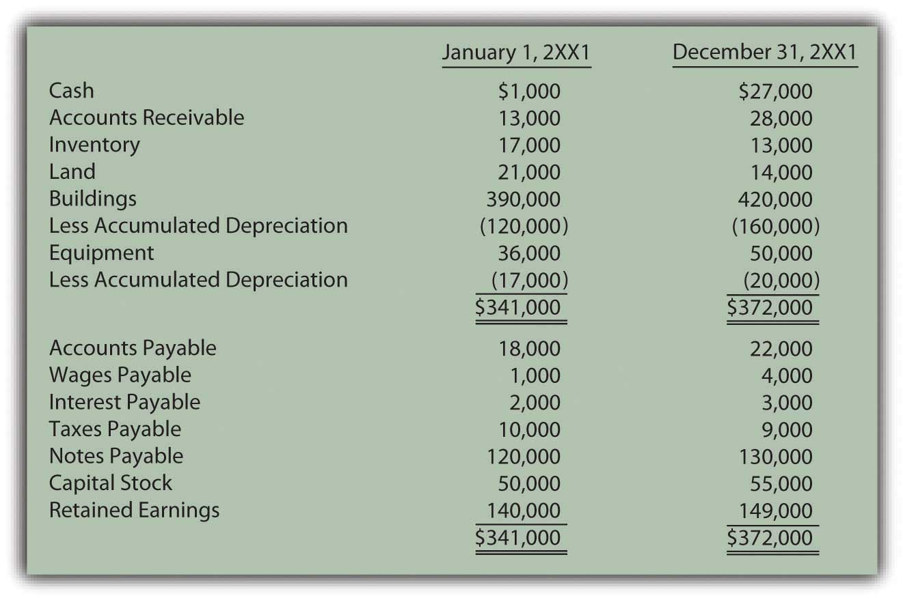
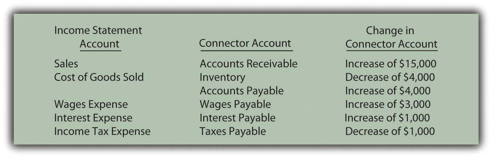
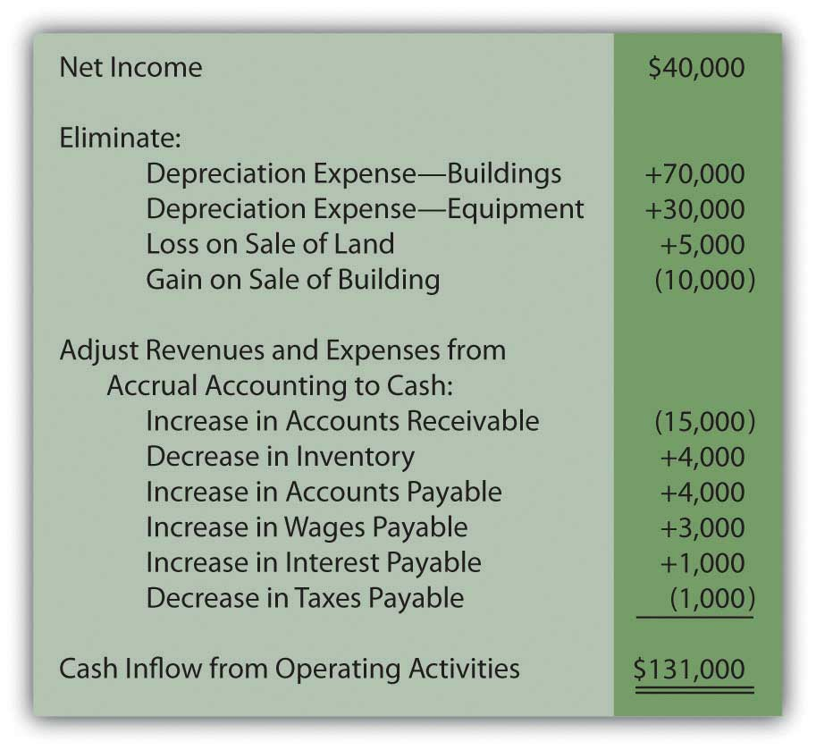
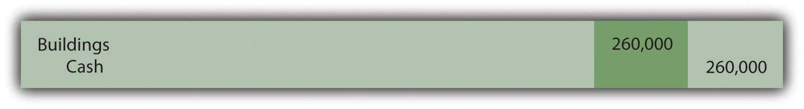
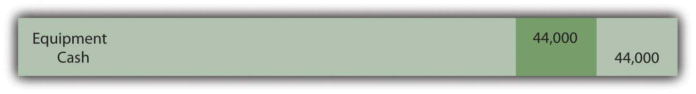
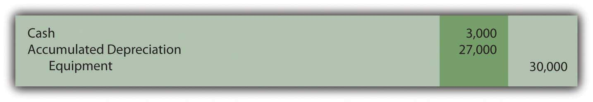
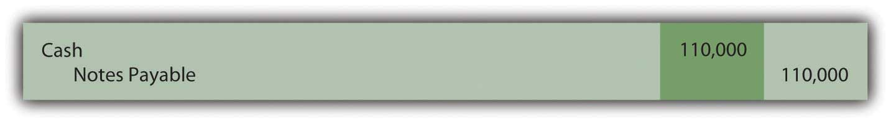
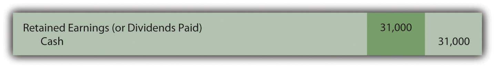
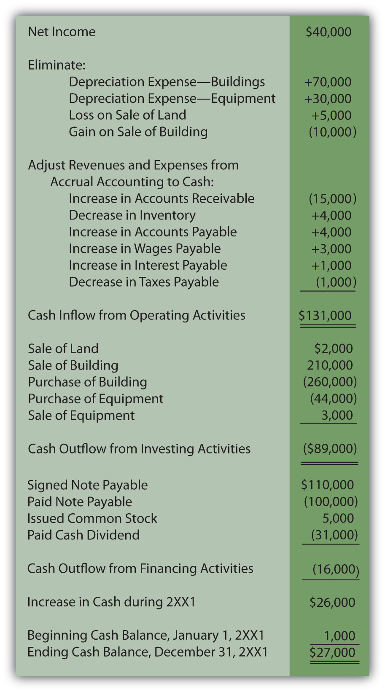

Question: The three sections of the statement of cash flows have been presented in this chapter but in separate coverage. Now, through a comprehensive illustration, these categories will be combined into a formal and complete statement.
The following information has been uncovered within the internal records maintained by the Ashe Corporation for the Year 2XX1. The company is a small organization that was incorporated several years ago in the western part of North Carolina.
A few of the significant financial events that occurred during the current year are as follows:
Ashe Corporation is now attempting to prepare its first complete set of financial statements as part of an application for a new loan. Company officials have created the following informal balance sheets and income statement.
Figure 17.22 Ashe Corporation—2XX1 Beginning and Ending Balance Sheets
Figure 17.23 Ashe Corporation—Income Statement for Year Ended December 31, 2XX1

A statement of cash flows now needs to be created for the Ashe Corporation. As shown in the balance sheet, cash increased from $1,000 to $27,000 during the course of this year. That $26,000 change should be explained. How does a company construct an entire statement of cash flows? Application of the indirect method for presenting operating activities is so prevalent that company officials have decided to use it.
Answer:
In both the direct and indirect methods, cash flows from operating activities are derived by following several specific steps:
Convert the remaining revenue and expense balances from accrual accounting to cash accounting by adjusting for the changes occurring during the year in related connector accounts.
Figure 17.24 Ashe Corporation—Change in Connector Accounts
The change in each of these six connector accounts—accounts receivable, inventory, accounts payable, wages payable, interest payable, and taxes payable—must be factored into the computation of cash flows from operating activities to arrive at the actual effect on cash for the period.
Accounts receivable—increase of $15,000. The receivables balance rises because more sales are made on credit than cash is collected. The reduction in the cash received causes the receivable to go up. This decrease in cash collections is reflected by subtracting the $15,000 from net income.
Inventory—decrease of $4,000. The inventory balance dropped, which indicates that less inventory was bought than was sold this year. Fewer purchases take less money, keeping the cash balance high. The decrease in inventory and its impact on cash are reported by an addition to net income.
Accounts payable—increase of $4,000. Liabilities increase because more debt is acquired than the amount of cash paid. Slowness of payment increases accounts payable but also helps keep the company’s cash balance high. This increase in accounts payable must be added to net income to arrive at the cash flows from operating activities.
Wages payable—increase of $3,000 and interest payable—increase of $1,000. Both of these accrued liabilities went up during this year. Once again, an increase in a liability indicates a reduction in payments. This saving of cash is shown within the indirect method by adding the increases in wages payable and interest payable to net income.
Taxes payable—decrease of $1,000. A liability goes down because of cash payments that reduce the obligation. However, they also shrink the amount of cash held. This effect is mirrored by subtracting the decrease in the liability from net income.
The steps for determining cash flows generated by operating activities have been completed (using the indirect method) and this part of the statement of cash flows can be prepared.
Figure 17.25 Ashe Corporation Cash Flows from Operating Activities for Year Ended December 31, 2XX1—Indirect Method
As can be seen here, cash generated by operating activities ($131,000) is considerably higher than the net income reported for the period ($40,000). That is not uncommon in the world of business especially since depreciation is often a large expense that does not require cash.
After accounting for operating activities, only three asset accounts remain to be examined (along with their accumulated depreciation balances where appropriate): land, buildings, and equipment. The accountant looks at each individually and attempts to recreate the transactions that brought about the various changes during the year.
Land decreased by $7,000 ($21,000 to $14,000). The information provided states that land costing $7,000 was sold but does not indicate the amount of cash received in the exchange. However, the income statement discloses a $5,000 loss on the sale of land. When land costing $7,000 is sold at a $5,000 loss, only $2,000 in cash is received. The journal entry recorded by Ashe Corporation must have been as follows.
Figure 17.26 Assumed Journal Entry for Sale of Land

Land is an asset so this inflow of cash will be reported as an investing activity.
Buildings increased by $30,000 ($390,000 to $420,000). According to the introductory information, one building with a cost of $230,000 and a net book value of $200,000 (related accumulated depreciation was identified as $30,000) was sold during this year for $210,000. Those amounts create the $10,000 gain that appears in the company’s income statement.
Figure 17.27 Assumed Journal Entry for Sale of Building

This transaction will be listed as a cash inflow within investing activities. However, the change in the buildings account is not yet fully explained. The above sale drops that account from $390,000 to $160,000 (a $230,000 reduction in cost). The final balance for the year was not $160,000 but rather $420,000, an increase of $260,000. Without mention of additional transactions, the assumption is made that another building was acquired during the period at that price.
Figure 17.28 Assumed Journal Entry for Purchase of Building
This second building transaction is also included within the investing activities but as a cash outflow.
Equipment increased by $14,000 ($36,000 to $50,000). The provided information states that one piece of equipment was purchased during the year for $44,000. This transaction identifies another cash outflow to be reported.
Figure 17.29 Assumed Journal Entry for Purchase of Equipment
This journal entry does not entirely explain the change that occurred in the equipment account. The beginning balance of $36,000 grew to $80,000 as a result of this purchase. Yet, the ending balance was just $50,000. Another $30,000 reduction ($80,000 less $50,000) took place. Equipment accounts decrease as the result of a sale or some other type of disposal. The $30,000 is the cost of equipment that was sold this period.
In recording the disposal of a long-lived asset, removal of any related accumulated depreciation is also necessary. For the equipment reported by Ashe Corporation, beginning accumulated depreciation was $17,000—a figure that increased by $30,000 due to depreciation for that year (to a balance of $47,000). Ending accumulated depreciation account shows a balance of only $20,000. The apparent reduction of $27,000 ($47,000 less $20,000) must have been the amount relating to the equipment that was sold. That was the accumulated depreciation removed in recording the disposal of this asset.
Because no gain or loss is reported in the income statement on the disposal of equipment, the amount received must have been equal to the $3,000 net book value of the asset ($30,000 less $27,000).
Figure 17.30 Assumed Journal Entry for Sale of Equipment
All the changes in the land, buildings, and equipment accounts have now been examined. Each individual transaction was recreated and the change in cash calculated. The investing activity section of the statement of cash flows is prepared as follows.
Figure 17.31 Ashe Corporation Cash Flows from Investing Activities for Year Ended December 31, 2XX1

Only three accounts remain unexamined: notes payable, capital stock, and retained earnings. They are all either liabilities or stockholders’ equity accounts and, thus, lead to financing activities.
Notes payable increased by $10,000 ($120,000 to $130,000). The information gathered from the company disclosed the signing of a note payable for $110,000 in cash. This first transaction is obviously an inflow of that amount of cash.
Figure 17.32 Assumed Journal Entry for Signing of Note Payable
According to the beginning and ending balance sheets, notes payable did not increase by $110,000 but only by $10,000. Thus, another transaction must have taken place that reduced this liability by $100,000. Notes payable decrease because of cash payments. Because no gain or loss on extinguishment of debt is reported in the income statement, Ashe Corporation must have paid exactly $100,000 to retire that same amount of debt.
Figure 17.33 Assumed Journal Entry for Extinguishment of Note Payable

The recording of this second transaction leads to the appropriate change in notes payable ($10,000 increase created by a $110,000 liability increase and a $100,000 decrease). It also uncovers another cash flow from financing activities: the $100,000 that was paid on the liability.
Capital stock increased by $5,000 ($50,000 to $55,000). The information states that Ashe Corporation issued stock to an investor for $5,000. That contribution created this account change.
Figure 17.34 Assumed Journal Entry for Issuance of Capital Stock

The business received this money and must report a financing activity cash inflow of $5,000. No other stock transactions are indicated.
Retained earnings increased by $9,000 ($140,000 to $149,000). This final balance sheet account increased by $40,000 because of the net income earned by Ashe Corporation this year. This amount is closed into retained earnings at the end of the year. The cash flows relating to net income have already been presented above within operating activities.
Retained earnings must have also declined by $31,000 to create the overall change of $9,000. As mentioned previously, other than net income, retained earnings are changed by virtually only one other event: the distribution of dividends. The information mentions that a dividend was paid this year and must have made up this $31,000 difference. Net income of $40,000 and a dividend of $31,000 do arrive at the reported increase in retained earnings of $9,000.
Figure 17.35 Assumed Journal Entry for Payment of Cash Dividend
With this final financing activity, the entire statement of cash flows can be created for the Ashe Corporation. All the transactions that affected cash during the year are included so that investors and other interested parties can gain a picture of the results of operations as well as the investing and financing decisions of management. This picture is an excellent complement to the income statement, statement of retained earnings, and balance sheet.
Figure 17.36 Ashe Corporation Statement of Cash Flows Year Ended December 31, 2XX1
Joe talks about the five most important points in Chapter 17 "In a Set of Financial Statements, What Information Is Conveyed by the Statement of Cash Flows?".